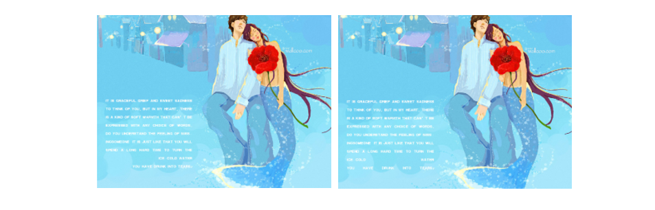
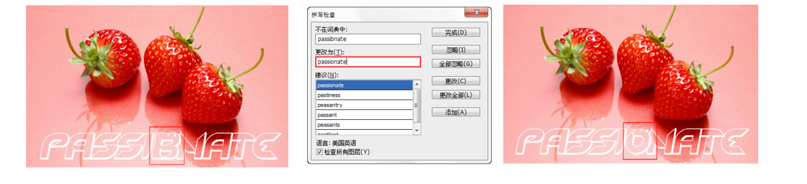

文字的艺术
认识文字工具与面板
认识文字工具
Photoshop 中 包 括 两 种 文 字 工 具， 分别是“横排文字工具” 和“直排文字工具” 。“横排文字工具” 可以用来输入横向排列的文字。
设置文本方向
选中文本，在选项栏中单击“切换文本取向”按钮，或者执行“类型 >文本排列方向”命令，也可以更改文字方向，可以将横向排列的文字更改为直向排列的文字。
设置字体
输入字体之前可以在选项栏中单击“设置字体系列”下拉倒三角图标，选择合适的字体。或者执行“窗口 > 字符”命令，打开“字符”面板，并在“字符”面板中选择合适字体。
在选项栏中设置字体样式
字体样式只针对部分英文字体有效。输入字符后，可以在选项栏中设置字体的样式，包括 Regular（规则）、Italic（斜体）、Bold（粗体）和 Bold Italic（粗斜体）。
设置字号
可以在选择文字对象的状态下直接在选项栏中输入数值，或在下拉列表中选择预设的字号，或者也可在打开的“字符”面板中进行字号的设置。
在选项栏中设置消除锯齿方式
输入文字以后，可以在选项栏中为文字指定一种消除锯齿的方式，其差别主要体现在文字的边缘处。
在选项栏中设置文本对齐
文本对齐是根据输入字符时光标的位置来设置文本对齐方式的。在文字工具的选项栏中提供了 3 种设置文本段落对齐方式的按钮：“左对齐文本” 、“居中对齐文本” 和“右对齐文本” 。选择文本以后，单击所需要的对齐按钮，就可以使文本按指定的方式对齐。
在选项栏中设置文本颜色
输入文本时，文本颜色默认为前景色。如果要修改文字颜色，可以先在“图层”面板中选择文本图层，然后在选项栏中单击颜色块，接着在弹出的“选择文本颜色”对话框中设置所需要的颜色。如果要更改部分文字颜色，需要框选这部分文字后进行更改。
认识文字蒙版工具
使用文字蒙版工具可以创建文字选区。文字蒙版工具包括“横排文字蒙版工具” 和“直排文字蒙版工具” 两种。使用文字蒙版工具输入文字以后，文字将以选区的形式出现。在文字选区中，可以填充前景色、背景色以及渐变色等。
详解“字符”面板
在文字工具的选项栏中，可以快捷地对文本的部分属性进行修改。如果要对文本进行更多的设置，就需要使用 “字 符”面板。在“字符”面板中，除了包括常见的字体系列、字体样式、字号、文本颜色和消除锯齿等设置，还包括行距、字距等常见设置。
详解段落面板
“段落”面板提供了用于设置段落编排格式的所有选项。通过“段落”面板，可以设置段落文本的对齐方式和缩进量等参数。

“字符样式”面板
在进行书籍、报刊杂志等包含大量文字排版的任务时，经常需要为多个文字图层赋予相同的样式，而在 Photoshop 中提供的“字符样式”面板为此类操作提供了便利的操作方式。在“字符样式”面板中可以创建字符样式、更 改字符属性，并将字符属性存储在字符样式面板中。在需要使用时，只需要选中文字图层，并单击相应字符样式即 可。
“段落样式”面板
“段落样式”面板与“字符样式”面板的使用方法相同，都可以进行样式的定义、编辑与调用。字符样式主要用于类似标题的较少文字的排版，而段落样式的设置选项多应用于类似正文的大段文字的排版。
设置段落对齐
在“段落”面板顶部可以对段落的对齐方式进行设置。单击“左对齐文本”按钮可使文字左对齐，段落右端参差不齐。
在“段落”面板顶部可以对段落的对齐方式进行设置。单击“左对齐文本”按钮可使文字左对齐，段落右端参差不齐。

单击“最后一行左对齐”按钮 可使最后一行左对齐，其他行左右两端强制对齐。单击“最后一行居中对齐”按钮 可使最后一行居中对齐，其他行左右两端强制对齐。
单击“最后一行右对齐”按钮 可使最后一行右对齐，其他行左右两端强制对齐。单击“全部对齐”按钮 可在字符间添加额外的间距，使文本左右两端强制对齐。

设置段落缩进
“左缩进”按钮 用于设置段落文本向右（横排文字）或向下（直排文字）的缩进量。 “右缩进”按钮 用于设置段落文本向左（横排文字）或向上（直排文字）的缩进量。
“首行缩进”按钮 用于设置段落文本中每个段落的第 1 行向右（横排文字）或第 1 列文字向下（直排文字）的缩进量。
设置段落空格
单击“段前添加空格”按钮，设置光标所在段落与前一个段落之间的间隔距离。
单击“段后添加空格”按钮，设置当前段落与后一个段落之间的间隔距离。
创建文字
点文字
点文字是一个水平或垂直的文本行，每行文字都是独立的。行的长度随着文字的输入而不断增加，不会进行自动换行，需要手动按 Enter 键进行换行。使用“横排文字工具”在画面中单击插入光标，然后键入文字。
段落文字
段落文字在平面设计中的应用非常广泛，由于具有自动换行、可调整文字区域大小等优势，所以常用于大量的文本排版中，如海报、画册、杂志排版等。单击工具箱中的“横排文字工具”按钮，在选项栏中设置合适的字体及大小，在操作界面单击并拖拽光标创建出文本框，然后输入所需文字。
路径文字
路径文字常用于创建走向不规则的文字行，在 Photoshop 中为了制作路径文字需要先绘制路径，然后将文字工具指定到路径上，创建 的 文 字 会 沿 着 路 径 排 列。 改 变 路 径 形 状时，文字的排列方式也会随之发生改变。单击工具箱中的“钢笔工具”按钮，沿人像外轮廓边缘绘制一段弧形路径。然后单击工具箱中的“横排文字工具”按钮，选择合适的字体及大小，将光标移动到路径的一端上，当光标改变时输入文字
练习：路径文字练习
变形文字
在 Photoshop 中，文字对象可以进行一系列内置的变形效果，通过这些变形操作可以在不栅格化文字图层的状态下制作多种变形文字。输入文字以后，在文字工具的选项栏中单击“创建文字变形”按钮 ,打开“变形文字”对话框。在该对话框中单击“样式”列表可以选择变形方式。
编辑文本
调整文字外框
在输入文字状态下按住 Ctrl 键，文字四周会出现文本外框，拖拽变换文本框，可以改变文字大小、角度、方向等.
拼写检查
如果要检查当前文本中的英文单词拼写是否有误，可以先选择文本，然后执行“编辑 > 拼写检查”命令，打开“拼写检查”对话框，Photoshop 会提供修改建议。

查找和替换文本
使用“查找和替换文本”命令能够快速地查找和替换指定的文字。执行“编辑 > 查找和替换文本”命令。可以打开“查找和替换文本”对话框，从中可以设置查找和替换参数。
点文本和段落文本的转换
与更改文字的方向相同，点文本与段落文本也是可以相互转换的，如果当前选择的是点文本，执行“类型 > 转换为段落文本”命令，可以将点文本转换为段落文本；如果当前选择的是段落文本，执行“类型 > 转换为点文本”命令，可以将段落文本转换为点文本。
编辑段落文本
创建段落文本以后，可以根据实际需求来调整文本框的大小，文字会自动在调整后的文本框内重新排列。另外， 通过文本框还可以旋转、缩放和斜切文字。
转换文字图层
将文字图层转化为普通图层
Photoshop 中的文字图层不能直接应用滤镜或进行涂抹绘制等变换操作，若要对文本应用这些滤镜或变换，就需要将其转换为普通图层，使矢量文字对象变成像素图像。在“图层”面板中选择文字图层，然后在图层名称上单击鼠标右键，接着在弹出的菜单中选择“栅格化文字”命令，就可以将文字图层转换为普通图层。
将文字转化为形状
选择文字图层，然后在图层名称上单击鼠标右键，接着在弹出的菜单中选择“转换为形状”命令，可以将文字转换为形状图层。
创建文字的工作路径
在“图层”面板中选择一个文字图层，然后执行“类型 > 创建工作路径”命令，可以将文字的轮廓转换为工作路径。通过这种方法既能够得到文字路径，又不破坏文字图层。